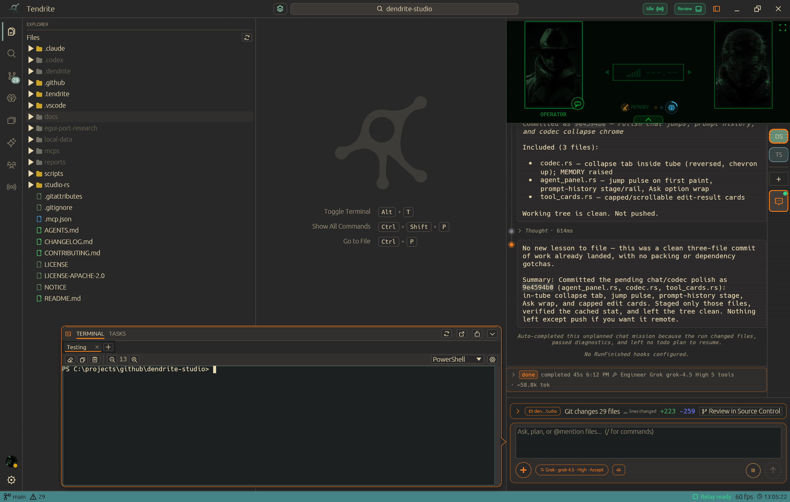
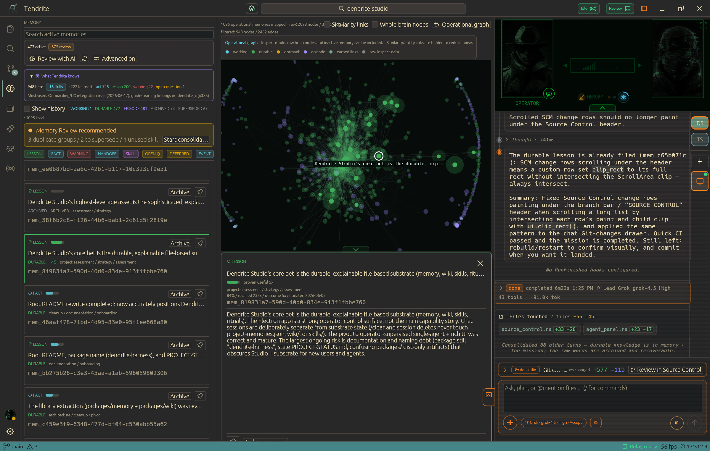
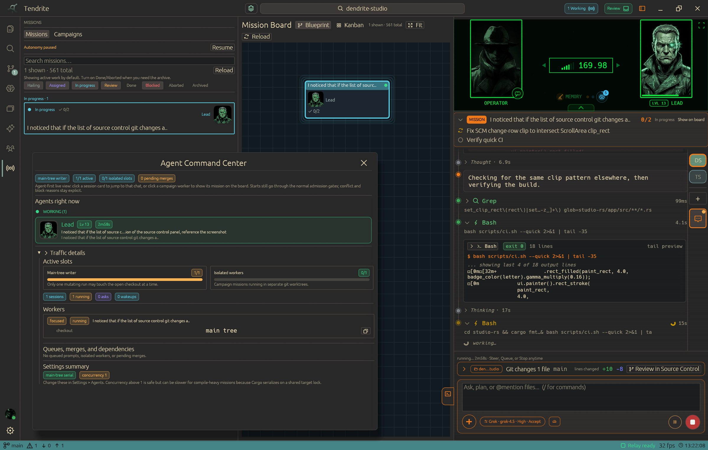
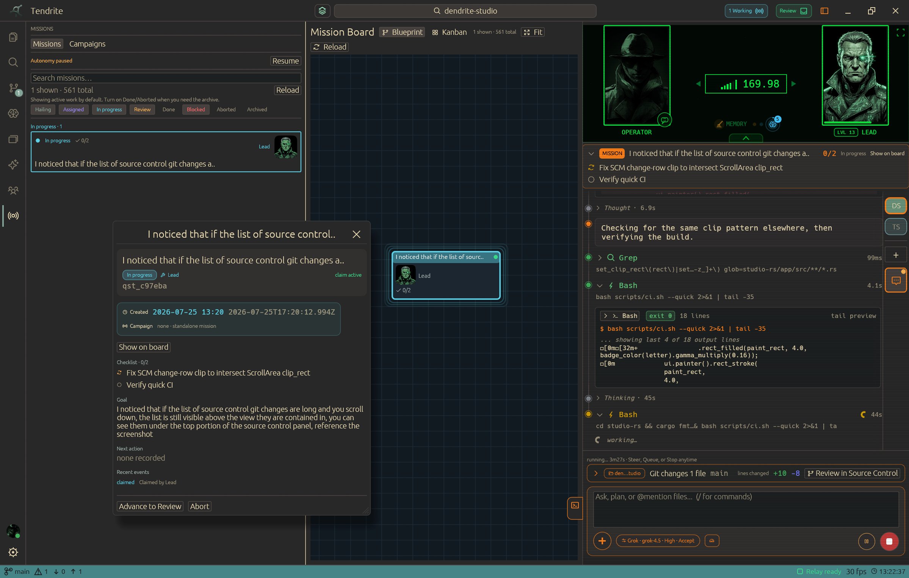
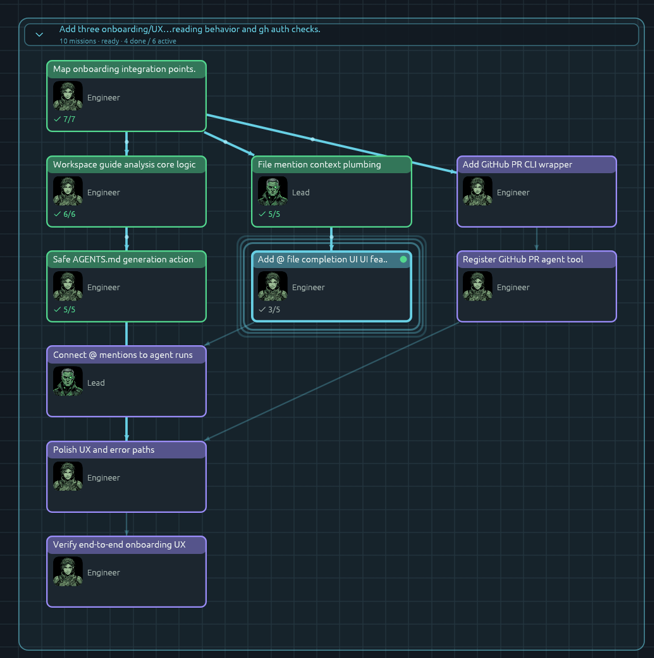
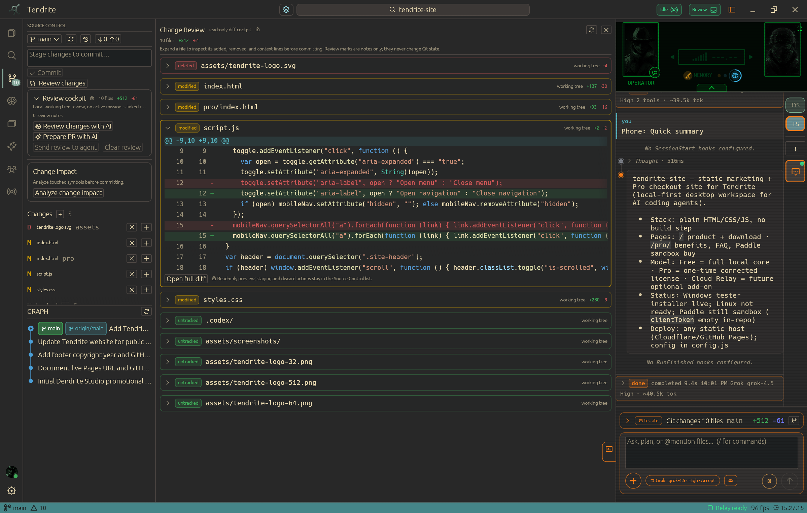
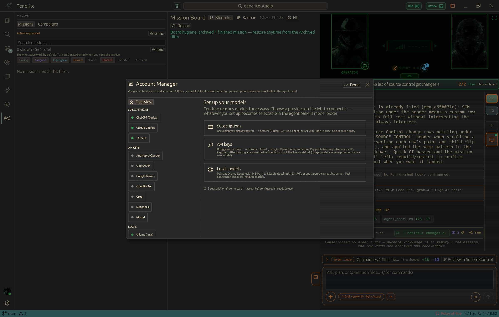
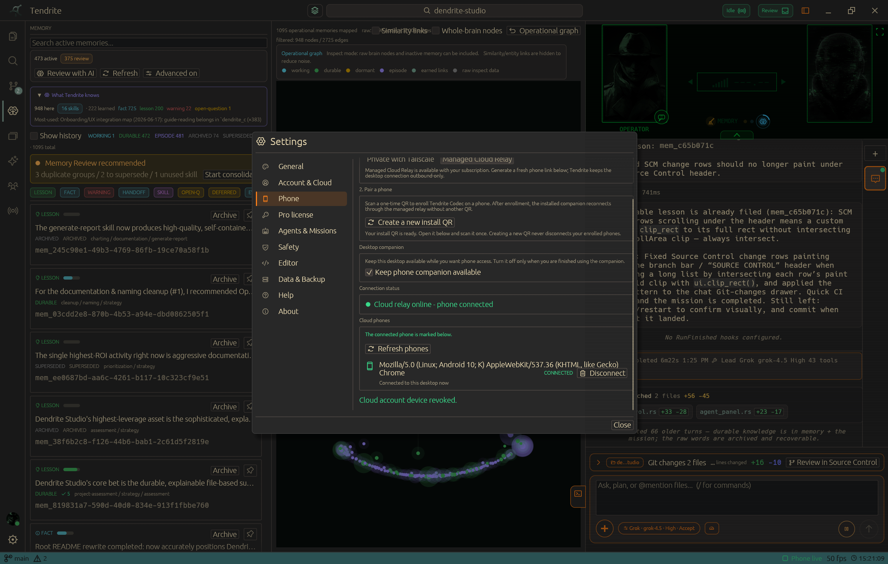
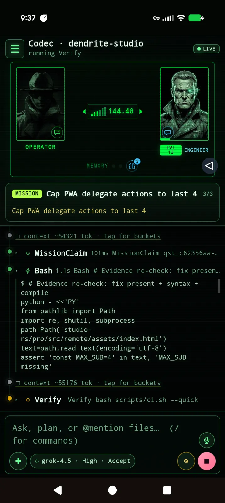

Mission control
Launch focused work, set roles, and track meaningful progress instead of losing the plan in a transcript.
Local-first coding command center
Tendrite turns your projects, agents, memory, source control, and decisions into one native workspace built for shipping work that matters.

01 Your code stays local
02 Agents work with roles and context
03 Decisions survive the next session
The workspace
Tendrite is not a chat wrapper. It gives an agent team a shared surface for the project state you need to inspect, guide, and finish a change.
Launch focused work, set roles, and track meaningful progress instead of losing the plan in a transcript.
Turn the facts, lessons, handoffs, and warnings from one run into useful context for the next.
Keep source control in the same operating surface as the agents writing and reviewing the change.
Connect compatible subscriptions, API keys, or local models. The workspace does not force one provider.
Memory substrate
Tendrite turns the things an agent learns while doing real work into a living project memory. It distinguishes what is still in flight from durable knowledge and history, then brings back only the context that fits the task at hand.
Agents capture useful facts, lessons, warnings, and handoffs as they go. Near-duplicate observations reinforce what is already known instead of filling the brain with copies.
Each task gets a focused brief drawn from keyword, semantic, and relationship signals—not a dump of the whole archive. Relevant files can also surface the lessons tied to them.
The agent can review, consolidate, and retire stale knowledge while you stay in control: pin what matters, inspect the graph, and keep archived or replaced memories recoverable.

A better way to watch work happen
Use a live map of the work so you can see where the team is, what is blocked, and which decision needs you next.
Turn a product goal into a bounded mission before agents begin changing files.
Use focused roles so research, implementation, and review stay legible.
Steer a run, answer a question, or inspect the work without restarting the entire effort.

Built for inspection
Keep campaign progress, source-control decisions, and model access close to the work instead of scattered across a terminal, browser, and chat tabs.




Phone companion
The Tendrite Codec companion lets you follow live work, answer agent questions, switch projects, and steer the next move from your phone. Use your own Tailscale path or Tendrite Cloud for a managed relay.
Explore the connected workspace

Pick your loadout
Use the full local workspace for free, add Pro once for connected capabilities, or choose Cloud when you want a managed phone relay.
FREE
$0forever
The local-first core. No account required.
The complete local workspace for agentic coding.
PRO LIFETIME
$29one time
Perpetual license with 12 months of updates.
Keep more projects, context, and agent setups ready.
TENDRITE CLOUD
$3per month
For verified Pro owners, after a 14-day free trial.
An optional managed phone relay path when you do not want to run Tailscale.
Desktop beta builds
Install Tendrite locally on Windows or Linux. Windows uses a standard setup installer; Linux ships as a portable AppImage. macOS requires a signed Apple build before it can ship.
About the creator
Tendrite started with an obsession with using AI agents to work on projects, going back to when GitHub Copilot first showed up in VS Code. One thing kept bothering me, though: everyone was trying to solve memory in a different way, and most solutions were just notes in folders with instructions telling the agent how to use them.
The goal was a memory system that could handle itself. Something that retained what mattered without making the person running the project maintain another system. That became Tendrite’s memory layer.
Once that existed, the rest of Tendrite started taking shape around it. The aim is to remove the friction that builds up over years of working on projects, where every small task can require a different tool, a different kind of context, or a different skill set.
The point was never to hand a project over and walk away. It was to make it easier to stay in the loop while a capable team handles more of the work.
Tendrite is being built for the experience I wanted from AI agents: less like fighting software, and more like playing a game. You direct a capable team, stay in control, and have fun building things.